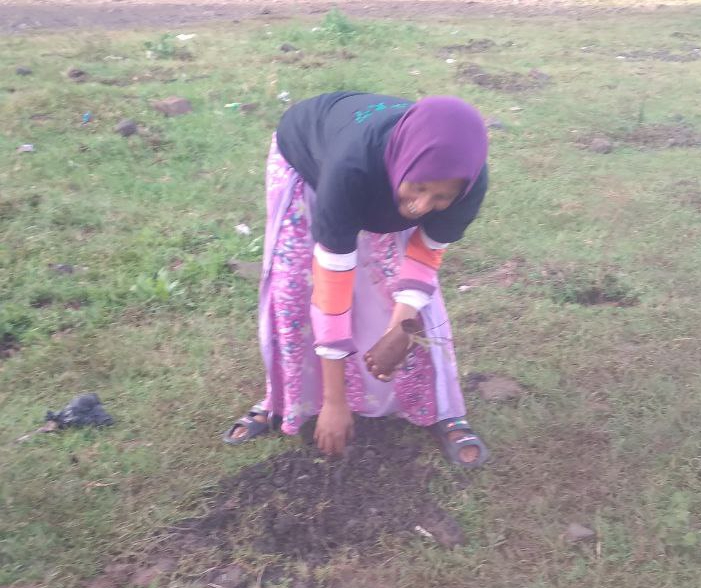
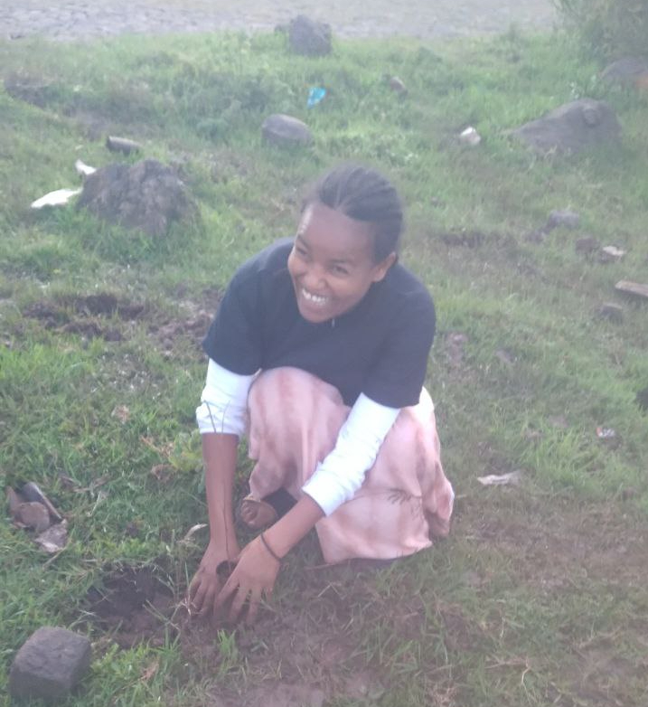
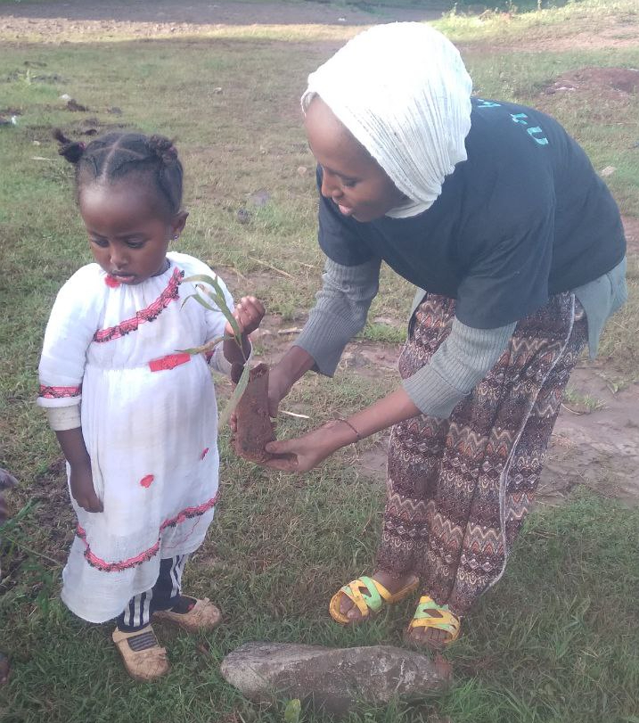
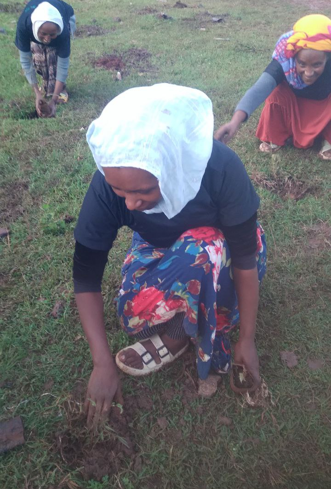
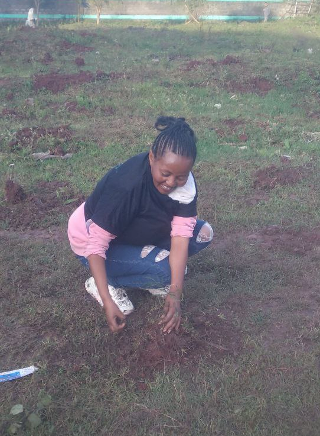

Our Work
Keabrak Charitable Organization is a non-profit Ethiopian NGO that is working hand in hand with Women, Children and Youth Affairs, NGOs, communities (Edir), in Ethiopia to complement with efforts and advance our projects. It is established to give hope to the lives of women and children in Ethiopia.
Peacebuilding
We work towards fostering peace in communities through dialogue, conflict resolution training, and creating platforms for mutual understanding among diverse groups.
Life Skills
Life skill training is provided for different target groups to address the unique needs and challenges of the community they serve with the goal of promoting social development and improving the lives of individuals and communities.
Women’s Economic Empowerment
Women and girls in Ethiopia are strongly disadvantaged compared to boys and men in several areas, including literacy, health, livelihoods, and basic human rights. They also suffer from low status in their society and lack social support networks. Manifestations of discrimination against women are numerous and acute.
We support women in gaining economic independence by providing training, access to resources, and connecting them with markets to improve their livelihoods.
Education for All
We advocate for inclusive education, aiming to ensure that all children regardless of their background, have access to quality education that enables them to thrive in society.
Health and Well-being
We support health initiatives aimed at improving access to basic healthcare services, nutrition, sanitation, and mental health awareness, contributing to overall community well-being.
Environmental Sustainability
We promote environmental sustainability through awareness campaigns, tree planting initiatives, and support for green projects that help safeguard natural resources for future generations.
    